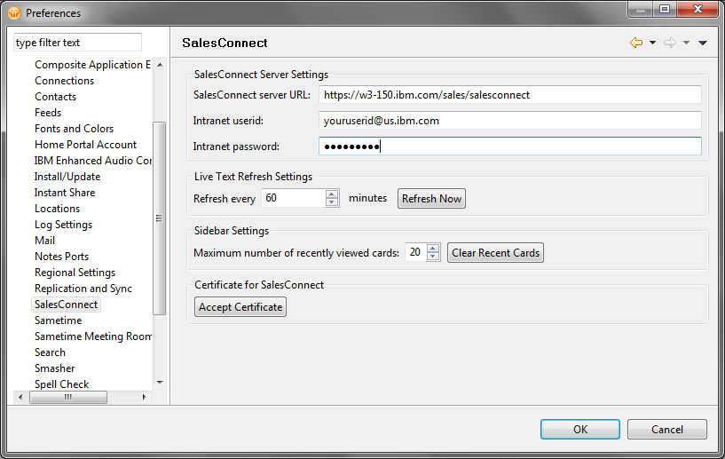

Please be aware that Firefox affords the capability to delete certificates, so you have the ability to delete
this certificate. If you choose to delete it, or accidentally delete it, you need to re-establish the trust
by clicking the Accept certificate button in File->Preferences->SugarCRM. (see accompanying Notes SugarCRM
Preference dialog).
